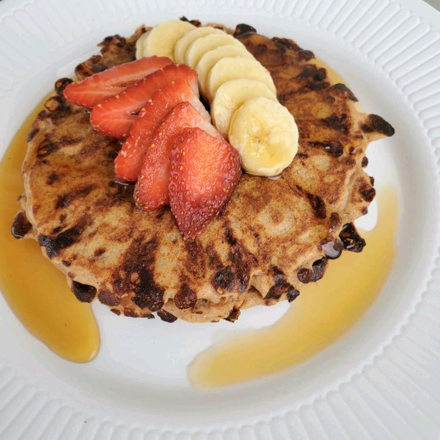

Home
Source Recipe
Protein Pancakes

Description
Fluffy whole-wheat pancakes brimming with wholesome flavor and muscle-boosting protein,
thanks to low-fat cottage cheese, milk, and eggs. Ready in just 12 minutes,
they deliver a satisfying 17 g of protein per serving and are perfect topped with a
drizzle of maple syrup or a dollop of Greek yogurt with honey. A quick, nutritious breakfast
that tastes as good as it performs.
Ingredients
- 1 cup whole wheat flour
- 1/2 teaspoon baking soda
- 1/2 teaspoon ground cinnamon
- 1/4 teaspoon salt (Optional)
- 1 cup low-fat cottage cheese
- 3/4 cup low-fat milk
- 2 eggs
- 2 tablespoons vegetable oil
Directions
-
Stir flour, baking soda, cinnamon, and salt together in a large bowl.
-
Whisk cottage cheese, milk, eggs, and oil together in a separate bowl.
Pour into the flour mixture; whisk until batter is just combined; it will be thick.
-
Heat an oiled griddle over medium-high heat; when a water drop on the surface dances and sizzles,
it's ready. Drop 1/4 cup batter onto the griddle. Cook until golden brown and bubbles break the surface,
1 to 2 minutes. Turn and cook until set, about 1 minute more. Repeat with remaining batter.
Macros (per serving)
- Calories 273
- Fat 12g
- Carbs 26g
- Protein 17g